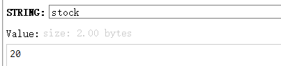
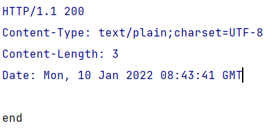
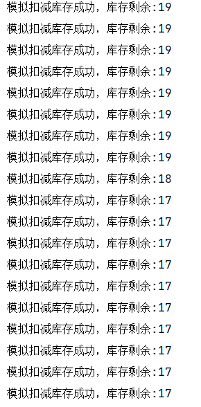
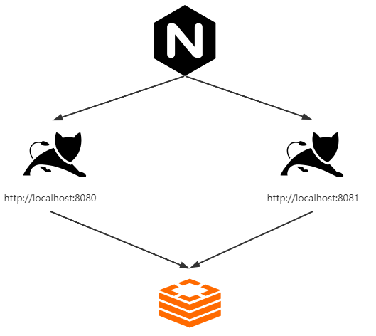
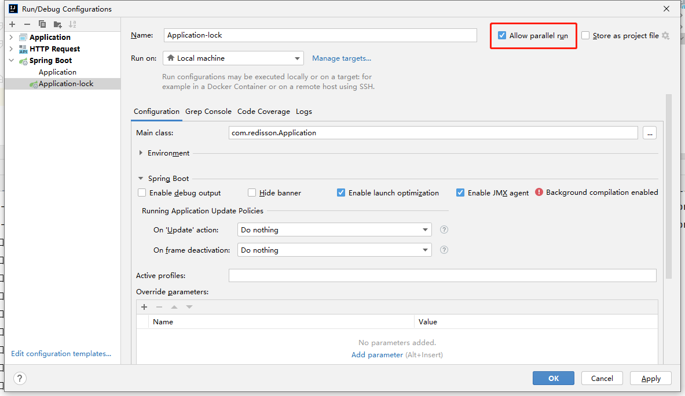
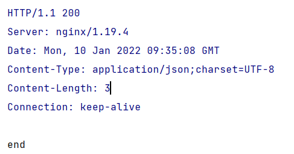
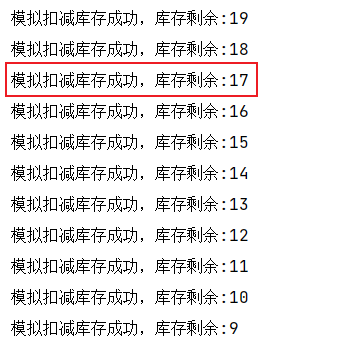
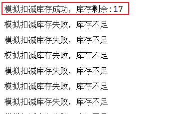
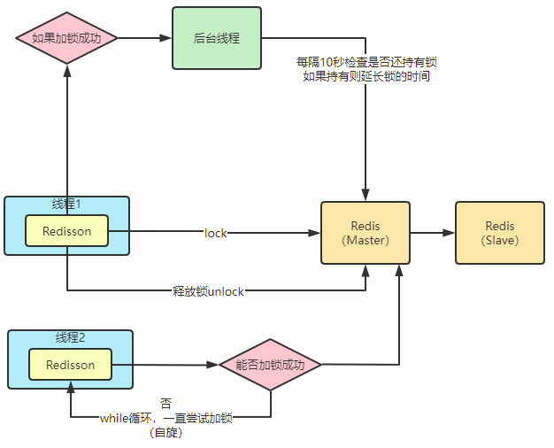

单体架构
先介绍一个很简单的业务场景，简单来说就是一个springBoot工程，然后通过请求一个接口去递减Redis中一个值，可以理解为扣库存或其他类似场景。
如果我们部署的为单体服务，毫无疑问，Redis中初始值20，每次请求递减1，那我们必然是请求20次可以递减为0。这也是我们想要达到的效果。
简单的代码代码如下：
1 | ("/test") |
controller中的扣减的方法代码，其他的都是最简单的springBoot项目中，没有别的代码。
测试之前要在
redis中添加stock键值，初始值为20
调用接口进行测试结果：
正常输出end，控制台输出-模拟扣减库存成功，库存剩余:19

但是，在高并发下的，我们上述的代码还能满足我们的预期吗？
JMeter测试结果

很显然，上面的代码存在并发问题，我们可以使用同步代码块，保证上面的逻辑达到我们的预期
修改代码如下：
1 | ("/test") |
至次，单体结构下是能够满足我们的预期，我们本篇主要讨论分布式锁的问题，所以单体架构我们就直接使用synchronized，单体服务不是我们本篇的重点，此处不做过多解释。
分布式架构
最简单的分布式架构图：

我们接下来模拟上图中的架构来简单搭建一个分布式的架构，（基于我们刚刚完成的单体架构）
nginx配置
1 | http中添加 |
Springboot启动配置
idea中设置可以并行运行，启动一个8080端口的，然后再启动一个8081端口

分别启动nginx和两个不同端口的springBoot工程，然后访问nginx服务对应的路径http://192.168.88.88/test

我们的微服务架构搭建完毕，接下来我们使用压测工具测试一下，看能否达到我们预期效果
JMeter测试
8081:

8080:

结果分析
通过两个服务打印的日志我们可以了解到库存17的时候出现了，一个库存卖了两次的问题。可想而知这个和我们的预期不同，我们也就要增加我们本篇重点的分布式的问题。
redis分布式锁
1 | ("/test1") |
代码如上，我们可以将jvm层级的同步锁修改为基于Redis的分布式锁，上面使用到的stringRedisTemplate是spring封装的Redis工具类，我们需要引入
1 | <dependency> |
stringRedisTemplate.opsForValue().setIfAbsent(lock, "sunfy")执行时，如果在Redis中如果存在lock的key时，不会做任何的事情，如果Redis中没有对应的key，则会写入对应的key，等同于jedis.setnx(key,value)命令。
上面代码中我们在执行业务逻辑之前，先写入某个key，写入成功返回true则继续执行具体的业务代码，如果返回false，则说明加锁失败，则返回提示语，不会执行具体的业务逻辑。具体业务代码执行完毕之后，我们再将对应的key进行删除，这样能够保证在分布式或集群环境下我们代码的可靠性，从而达到我们预期的效果。
这样我们就一切安好了吗？当然不是问题1：业务代码异常
这个是很常见的，也很容易想明白的问题，业务代码如果抛出异常，那么锁删除的代码将不会执行，那我们后续的代码将永远无法获取到锁。解决这个问题比较容易，将我们的业务代码try{}finally{}，将最后删除锁的逻辑写在finally中，保证删除锁逻辑一定执行，可以保证在业务代码抛出异常的情况，也能正常删除锁。
问题2：删除锁逻辑异常
虽说我们将删除锁逻辑放在finally中，保证了代码一定执行，但是在删除锁代码执行过程中如果抛出异常呢，导致删除锁执行失败呢？这样的情况我们不能否认是可能出现的，那我们就需要进一步健壮我们的代码。
解决这个问题，我们可以通过key的时效来解决，也就是在设置key时设定key的过期时间，过期后自动删除，这样可以保证在锁删除失败的情况下，锁过期后也会自动删除，当然在锁未过期的这段时间内，其他线程是无法获取到锁的。
增加key的过期时间
stringRedisTemplate.expire(lock, 10, TimeUnit.SECONDS);
此处设置的过期时间为10秒，10秒后当前设定的key会自动删除。
问题3：业务代码在锁超时时间内未执行完成
假设我们有一个比较复杂的业务逻辑代码，可能执行时间需要12s，但是我们设置的锁的超时时间只有10s，锁超时后，当前线程持有的锁被删除，但是业务并未执行完成，这样同样会导致业务代码执行不符合我们预期的情况。
解决这个问题我们就需要给key增加锁续命的逻辑，我们可以通过新起一个线程，监控当前key的过期时间，可以在锁过期时间还剩一半或者三分之一的时候，检查一下当前持有锁的线程是否还是原线程，如果是则给当前key设置过期时间为原本的过期时间，循环往复，直至逻辑执行完成，删除锁。
问题4：高并发的情况下，删除锁的线程和加锁的线程不一致
也就是删除了不是本线程加的锁，同样的会导致我们达不到预期的效果，这个的解决方案我们可以在锁的key值上做一些文章，比如在加锁时，锁的key增加当前当前线程的标识，并在删除锁时，判断当前删除的锁是否是本线程加的锁，是则删除，否则不删除。
加锁
String clientId = UUID.randomUUID().toString();
Boolean result = stringRedisTemplate.opsForValue().setIfAbsent(lock, clientId,10, TimeUnit.SECONDS);解锁
if (clientId.equals(stringRedisTemplate.opsForValue().get(lockKey))){
stringRedisTemplate.delete(lockKey);
}
这几个问题是我们容易想到的一些问题，但是我们也不能说我们现在的代码就能够百分百解决分布式锁的问题，我们只能尽可能提升代码的健壮性，已保证我们业务达到预期的效果。
Redisson分布式锁
Redisson分布式锁，是一个开源的基于Redis实现的分布式锁，我们上述的这些问题，在Redisson中都已经帮我们时间，我们可以开箱即用，避免我们重复造轮子，也可以让我们更避免很多坑。
实现原理图

至于Redisson中的实现，里面使用到了大量的lua脚本，篇幅问题我们，此处不做过多介绍。我们就介绍一下如果使用Redisson解决我们上述的业务
引包
1 | <dependency> |
代码
1 | ("/test") |
可以发现，我们使用还是很简单的，只需要简单的调用redissonLock.lock();和redissonLock.unlock();进行加锁解锁就可以了。
扩展
我们考虑一种情况，如果我们Redis使用的是集群或者主从架构，当我们在主节点加锁成功后，还未同步给从节点时，主节点的Redis宕机了，那此时还是会出现问题。
如果要解决这个问题，我们可以采用基于zookeeper实现的分布式锁，因为在zookeeper集群中采用的是强一致性协议，也就是集群中有多个节点都写入成功后，才会返回给客户端加锁成功的反馈，此时如果主节点宕机，那肯定会选择有加锁成功的节点为新的主节点。
如果非得使用Redis，RedLock中也实现了类似zk集群的形式，不过这个不推荐使用，可能存在bug。

...
...
Copyright 2021 sunfy.top ALL Rights Reserved